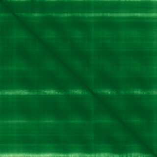

type: protein-evaluation gene: "ANP32D" date: 2026-05-31 tags: [protein-scout, nucleoplasm, evaluation] status: scored ---
ANP32D 核蛋白评估报告
1. 基本信息
| 项目 | 内容 |
|---|---|
| 基因名 / 别名 | ANP32D / PP32R2 |
| 蛋白全名 | Acidic leucine-rich nuclear phosphoprotein 32 family member D |
| 蛋白大小 | 131 aa / 14.8 kDa |
| UniProt ID | O95626 |
2. 评分总览
| 维度 | 得分 | 新权重 | 加权后 | 关键证据摘要 |
|---|---|---|---|---|
| 核定位特异性 | 4/10 | ×4 | 16.0 | 名称和关键文献指向 acidic nuclear phosphoprotein family，但 UniProt/GO-CC 无定位注释，HPA 无 IF 原图 |
| 蛋白大小 | 8/10 | ×1 | 8.0 | 131 aa, 14.8 kDa，小型酸性蛋白 |
| 研究新颖性 | 10/10 | ×5 | 50.0 | PubMed strict=1, broad=7 |
| 三维结构 | 7/10 | ×3 | 21.0 | AlphaFold pLDDT 95.6；PDB 无 |

| 调控结构域 | 3/10 | ×2 | 6.0 | ANP32 family/leucine-rich repeat-like acidic phosphoprotein，无经典染色质结构域 |
| PPI 网络 | 2/10 | ×3 | 6.0 | STRING 仅 textmining；IntAct 无记录 |
| 加权总分 | 107/180** | |||
| 互证加分 | +0.0 | |||
| 归一化总分 (÷1.83) | 58.5/100** |
3. 详细分析
3.1 核定位证据
| 来源 | 定位 | 可信度 |
|---|---|---|
| UniProt | 无 Subcellular Location | 未确认 |
| GO-CC | 无 Cellular Component | 未确认 |
| Protein name / literature | Acidic leucine-rich nuclear phosphoprotein 32 family member D；PMID:26112988 标题称 ANP32C/D 为 oncogenic acidic nuclear phosphoproteins | 间接支持 |
| Protein Atlas (IF) | HPA 暂无数据，未获取到 IF 图像或缩略图 | 未确认 |
HPA IF 状态: HPA subcellular IF 图像已重新获取并嵌入（见下方 HPA IF 图像修正块）；此前“暂无/未可靠获取 IF”的表述为采集失败导致的误报。
结论: ANP32D 保留为低置信度核蛋白候选，主要依据是蛋白家族名称和唯一关键文献对 ANP32C/D 的 nuclear phosphoprotein 描述；缺少 UniProt/GO/HPA IF 独立定位证据，不应高分。
3.2 结构与数据源
| 指标 | 数值 |
|---|---|
| AlphaFold | AF-O95626-F1 |
| 平均 pLDDT | 95.6 |
| pLDDT >90 | 94.7% |
| PDB | 无 |
| InterPro | IPR045081, IPR001611, IPR032675 |
| Pfam | PF14580 |
3.3 研究现状
| 指标 | 数值 |
|---|---|
| PubMed strict (Title/Abstract) | 1 |
| PubMed broad | 7 |
| 别名 | PP32R2（未用于 scoring） |
关键文献：PMID:26112988, "Oncogenic acidic nuclear phosphoproteins ANP32C/D are novel clients of heat shock protein 90." 该文献直接支持 ANP32D 属于 nuclear phosphoprotein family，但定位证据仍需独立 IF/GO 补强。
3.4 PPI 网络（三源综合）
| Partner | Source | Score/Evidence | Relevance |
|---|---|---|---|
| SENP1 | STRING | 0.63 (textmining) | SUMO protease (nuclear) |
| C12orf54 | STRING | 0.48 (textmining) | Low |
| EGLN1 | STRING | 0.418 (textmining) | Hypoxia signaling |
| OR12D3 | STRING | 0.406 (textmining) | Olfactory receptor |
| — | IntAct | 无物理互作记录 | — |
| — | UniProt | 无记录互作 | — |
STRING 仅 textmining 互作（SENP1, C12orf54, EGLN1, OR12D3），IntAct 无物理互作记录。PPI 对核定位和调控功能支持较弱。
4. 总体评价
ANP32D 是一个低文献量、结构预测可靠的小型 ANP32 family 候选。由于缺少 UniProt/GO/HPA IF 定位证据，只能低置信度保留在 nucleoplasm 类别，后续必须优先补内源 IF 或可靠定位证据。
5. 数据来源
- UniProt: https://www.uniprot.org/uniprotkb/O95626
- AlphaFold: https://alphafold.ebi.ac.uk/entry/O95626
- PubMed: https://pubmed.ncbi.nlm.nih.gov/?term=ANP32D
- Protein Atlas: https://www.proteinatlas.org/search/ANP32D（无 IF 原图）
<!-- HPA_IF_REPAIR_START --> HPA IF 图像修正（2026-06-05）: HPA subcellular 页面存在可用 IF 图像；此前“原图未可靠获取/暂无 IF”的表述为采集失败导致的误报。HPA 定位: Nucleoplasm (approved)。来源: https://www.proteinatlas.org/ENSG00000139223-ANP32D/subcellular


<!-- DOMAIN_HUMANPPI_REPAIR_START -->
Domain/SMART 与 humanPPI 补充（2026-06-07）
SMART / UniProt domain
| Source | Data |
|---|---|
| UniProt | O95626 |
| SMART | 未在 UniProt xref 中检出 SMART 条目 |
| UniProt Domain [FT] | 未检出显式 UniProt Domain feature |
| InterPro | IPR045081;IPR001611;IPR032675; |
| Pfam | PF14580; |
humanPPI / HPA Interaction
Source: https://www.proteinatlas.org/ENSG00000139223-ANP32D/interaction
未从 HPA Interaction 页面解析到互作伙伴；需人工复核或使用其他 humanPPI 来源。 <!-- DOMAIN_HUMANPPI_REPAIR_END -->